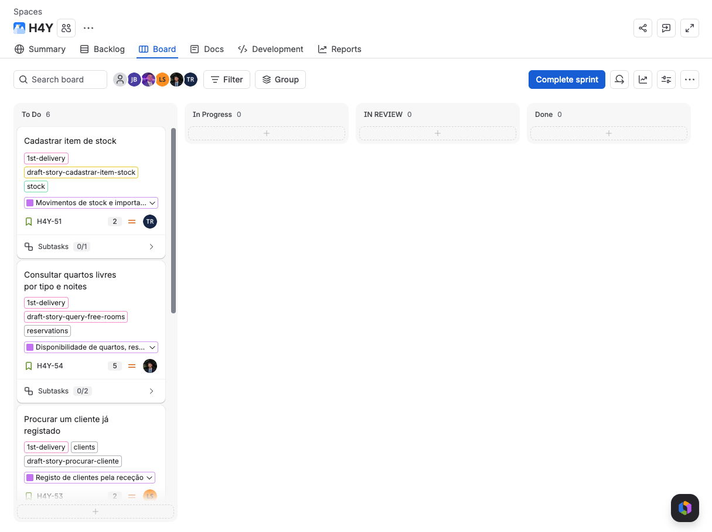
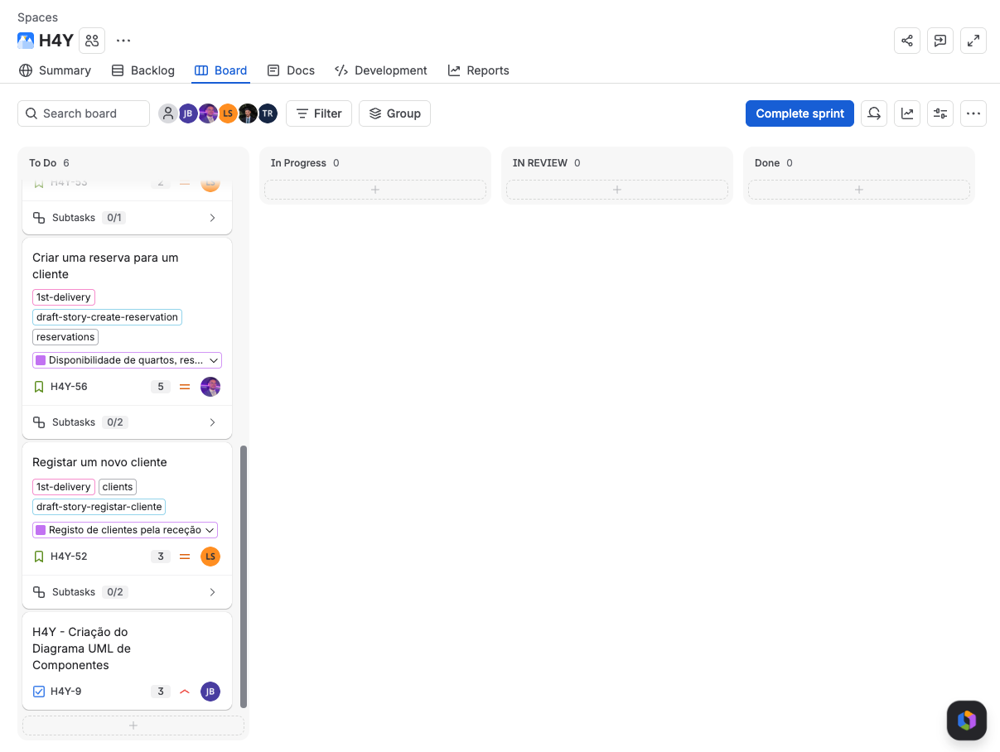

| Preparação | Reunião | Acompanhamento |
|---|---|---|
| - Rever o backlog e a ordem das stories - Rever as ações da retrospetiva da Sprint 3 - Confirmar a disponibilidade da equipa - Verificar se o código já cobre alguma story | - Confirmar os pontos de cada story (escala de Fibonacci) - Confirmar o sprint goal com valor para o hotel - Confirmar os responsáveis - Combinar os nomes das classes novas | - Atualizar o quadro no Jira (sprint, datas e responsáveis) - Fazer o daily scrum todos os dias - Ponto de controlo a meio da sprint (03/11) - Validar as stories com os testes de aceitação |
| Nome | Função |
|---|---|
| José Cruz | Team Leader (Scrum Master e Product Owner) e developer |
| Tiago Borja | Developer |
| Lukas Sperandio | Developer |
| Pedro Costa | Developer |
| António Martinho | Developer |
| Sprint goal | Sprint 3: o hotel passa a ter os seus 20 quartos e os preços por noite no sistema. A receção já consegue dizer ao cliente que quartos existem e quanto custam, e cada funcionário só usa as funções do seu papel. |
|---|---|
| Pontos da história | 30 pontos no Jira (24 no planeamento, mais 6 porque a H4Y-28 subiu de 2 para 8 pontos). 25 concluídos (H4Y-7, H4Y-8, H4Y-23, H4Y-25, H4Y-26, H4Y-28 e H4Y-50). 5 pontos em carry-over (H4Y-9 e H4Y-51). |
| Resumo | Concluídos: regra de funções por papel, pisos e zonas, quartos, preço base, lista de quartos e correções dos diagramas de casos de uso e de sequência. A H4Y-9 e a H4Y-51 passam para a Sprint 4. A retrospetiva pediu para ordenar as tarefas pelas dependências e definir um ponto de controlo a meio da sprint. |
| Data de início | 31/10/2026 |
|---|---|
| Data de término | 06/11/2026 |
| Sprint goal | A receção passa a atender os clientes ao balcão: regista e encontra clientes, diz que quartos estão livres nas datas pedidas e cria a reserva. |
| Sprint atual | Sprint anterior | |
|---|---|---|
| Total de dias | 7 dias - 5 úteis | 7 dias - 5 úteis |
| Capacidade da equipa | 50 h (5 elementos x 10 h; 2 h por dia) | 50 h (5 elementos x 10 h) |
| Capacidade prevista | 20 pontos (15 de histórias novas e 5 de carry-over). Limite: 21 pontos, a média das Sprints 2 e 3 (18 e 25). | 30 pontos no fim da sprint (24 no planeamento). 25 concluídos. |
| Capacidade individual | 8 h por elemento | 8 h por elemento |
| Estimação | Story points na escala de Fibonacci (1, 2, 3, 5, 8, 13) | Story points na escala de Fibonacci (1, 2, 3, 5, 8, 13) |
| Risco | Mitigação |
|---|---|
| A H4Y-72 precisa da tabela customers da H4Y-69, porque reservations tem uma chave estrangeira para customers. A retrospetiva pediu menos dependências entre tickets. | O Lukas e o Pedro fazem merge cedo de um único script SQL (v7) com customers e reservations. Até lá, os testes usam repositórios em memória. |
| O diagrama de classes não tem os repositórios de clientes, reservas e itens. Duas pessoas podem criar classes parecidas. | Combinar os nomes no primeiro dia. Cada PR atualiza o código e o docs/uml juntos. |
| A H4Y-70 e a H4Y-71 alteram o client.fxml. A H4Y-68, a H4Y-70, a H4Y-73 e a H4Y-76 acrescentam botões ao menu. Conflitos de merge. | O José faz merge primeiro do ecrã de clientes e o Lukas acrescenta depois o separador de pesquisa. Os botões do menu entram em PRs pequenos. |
| A H4Y-28 subiu de 2 para 8 pontos durante a Sprint 3 e os documentos não acompanharam. As estimativas podem voltar a falhar (retrospetiva). | Confirmar os pontos na reunião de planeamento. Registar qualquer mudança de âmbito no momento em que acontece. |
| H4Y-9: o diagrama está com mau aspeto, porque algumas alterações não são bem suportadas pelo Mermaid, e não tem portos de saída. | O card no Jira tem o que falta. O José corrige o diagrama primeiro. |
| Q-05 (diferença entre cancelar e apagar) não está confirmada pelo professor. Afeta a H4Y-55 na Sprint 5. | Perguntar na próxima aula prática. |
| O trabalho pode voltar a concentrar-se nos últimos dias da sprint (retrospetiva). | Ponto de controlo a 03/11: H4Y-69, H4Y-72 e o script SQL têm de estar no main. Se não estiverem, a H4Y-51 é a primeira a sair, porque não tem ligação ao sprint goal. |
A coluna N.º dá a ordem de trabalho. Primeiro o carry-over, depois as histórias que criam a base das outras (clientes e reservas). Os pontos seguem a escala de Fibonacci.
| N.º | Chave | Item (título no quadro) | Tipo | Pontos (Fibonacci) | Responsável |
|---|---|---|---|---|---|
| 1 | H4Y-9 | H4Y - Criação do Diagrama UML de Componentes | Tarefa (carry-over) | 3 | José Cruz |
| 2 | H4Y-51 | Cadastrar item de stock | História (carry-over) | 2 | Tiago Borja |
| 3 | H4Y-52 | Registar um novo cliente | História | 3 | Lukas Sperandio, José Cruz |
| 4 | H4Y-54 | Consultar quartos livres por tipo e noites | História | 5 | Pedro Costa, Tiago Borja |
| 5 | H4Y-53 | Procurar um cliente já registado | História | 2 | Lukas Sperandio |
| 6 | H4Y-56 | Criar uma reserva para um cliente | História | 5 | António Martinho |
| Total | 20 |
No Jira só as histórias têm pontos. A divisão da H4Y-52 (2 + 1) e da H4Y-54 (3 + 2) é uma estimativa. O Pedro tem menos pontos porque a H4Y-72 tem a regra de sobreposição de datas, o maior risco da sprint.
| Responsável | Trabalho | Pontos |
|---|---|---|
| José Cruz | H4Y-9 (3) e H4Y-70 (1) | 4 |
| Tiago Borja | H4Y-68 (2) e H4Y-73 (2) | 4 |
| Lukas Sperandio | H4Y-69 (2) e H4Y-71 (2) | 4 |
| Pedro Costa | H4Y-72 (3) | 3 |
| António Martinho | H4Y-75 (3) e H4Y-76 (2) | 5 |
Nível 1: não depende de outra subtarefa. Nível 2: começa depois do nível 1 estar em curso. Nível 3: usa o trabalho do nível 2 (ação da retrospetiva).
| Chave | Subtarefa (título no quadro) | Item pai | Responsável | Nível |
|---|---|---|---|---|
| H4Y-68 | 51.1 Cadastrar item de stock: StockService.createItem, ecrã e testes | H4Y-51 | Tiago Borja | 1 |
| H4Y-69 | 52.1 Serviço: ClientService.register, repositório de clientes, duplicado e testes | H4Y-52 | Lukas Sperandio | 1 |
| H4Y-72 | 54.1 Serviço: RoomService.isAvailable e searchRooms, regra de sobreposição de datas e testes | H4Y-54 | Pedro Costa | 1 |
| H4Y-70 | 52.2 Ecrã: client.fxml e ClientController para registar clientes | H4Y-52 | José Cruz | 2 |
| H4Y-71 | 53.1 Procurar cliente por documento: serviço, ecrã e testes | H4Y-53 | Lukas Sperandio | 2 |
| H4Y-73 | 54.2 Ecrã: pesquisa de quartos livres por tipo e datas | H4Y-54 | Tiago Borja | 2 |
| H4Y-75 | 56.1 Serviço: ReservationService.create, repositório de reservas, recusa de sobreposição e testes | H4Y-56 | António Martinho | 2 |
| H4Y-76 | 56.2 Ecrã: criar reserva a partir do cliente e do quarto livre escolhidos | H4Y-56 | António Martinho | 3 |
| H4Y-9 | Sem subtarefas. O que falta está no comentário do card. | - | José Cruz | 1 |


Created by: jmbcruz. Updated by: jmbcruz. AI use: sprint-planner, Claude Code (claude-opus-5-5), 2026-10-31. Reviewed by: pending.